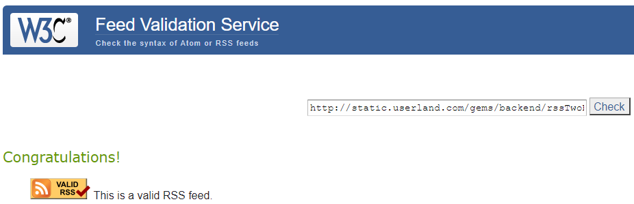
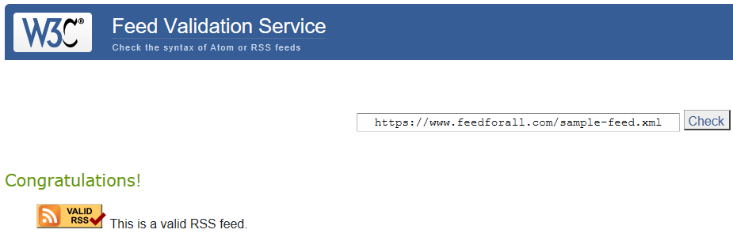
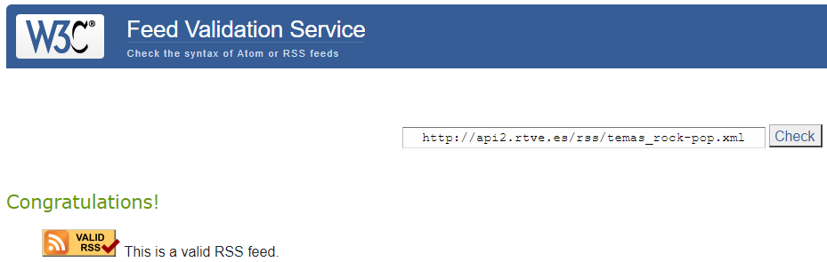
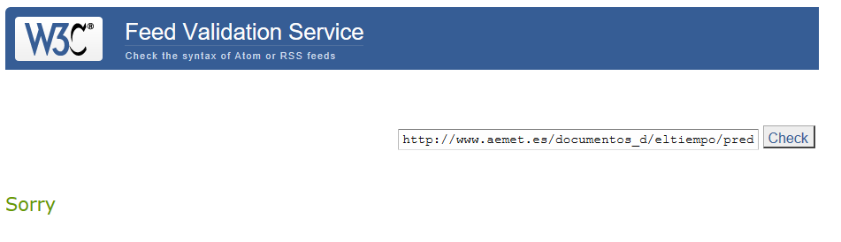

Primer enlace
Segundo enlace
Tercer enlace
Cuarto enlace
Primer enlace
Habría que corregir lo siguiente:
dave@userland.com(correopepito123@gmail.com)
dave@userland.com(correopepito123@gmail.com)
Donde se declara el rss añadir esto rss version="2.0" xmlns:atom="http://www.w3.org/2005/Atom%22%3E" atom: link href="http://dallas.example.com/rss.xml" rel="self" type="application/rss+xml"
Segundo enlace
Habría que corregir lo siguiente:
marketing@feedforall.com(correopepito123@gmail.com)
webmaster@feedforall.com(correopepito123@gmail.com)
Se repite 2 veces el título del channel
Usan mal el link del channel
Fallo en la etiqueta item, hay que añadir un guid por cada item
Donde se declara el rss añadir esto :
rss version="2.0" xmlns:atom="http://www.w3.org/2005/Atom%22%3E"
atom:link href="http://dallas.example.com/rss.xml" rel="self" type="application/rss+xml"
Tercer enlace
Habría que corregir lo siguiente:
Fallo etiqueta item: hay que añadir un guid(único) a cada item. Hay que quitar las etiquetas style en las etiquetas description. Donde se declara el RSS se añade esto: rss version="2.0" xmlns:atom="http://www.w3.org/2005/Atom%22%3E" atom:link href="http://dallas.example.com/rss.xml" rel="self" type="application/rss+xml"
Cuarto enlace
Habría que corregir lo siguiente:
Fallo al añadir el link del channel Falta por añadir "http://" en el enlace Falta añadir en el link rel:self Fallo en el feed: feed xmlns:atom="http://www.w3.org/2005/Atom%22%3E"
Enlace 1: línea 4 hasta 82
Enlace 2: línea 4 hasta 50
Enlace 3: línea 3 hasta 421
Enlace 4: línea 2 hasta la 20
Enlace 1: 9
Enlace 2: 3
Enlace 3: 69
Enlace 4: 1 entry
---
Sólamente 1
Son: <title> , <link> y <description>
Son:
language
copyright
managingEditor
webMaster
pubDate
lastBuildDate
category
generator
docs
cloud
ttl
image
textInput
skipHours
skipDays
Son:
title
link
description
author
category
comments
enclosure
guid
pubDate
source
Es enclosure, sus atributos son:url,length y type
---
Sólamente 1
Son: <title> y <update>
Son: <author> y <link>
Son:
category
contributor
generator
icon
logo
rights
subtitle
Son:
id
title
updated
Son:
author
content
link
summary
Son:
category
contributor
published
rights
source
<channel>, <title>, <description>, <link>, <item> y <rss>
---
<title>, <link>, <author>, <update>, <id>, <summary>, <entry> y <feed>
---